Movie Clip Editor
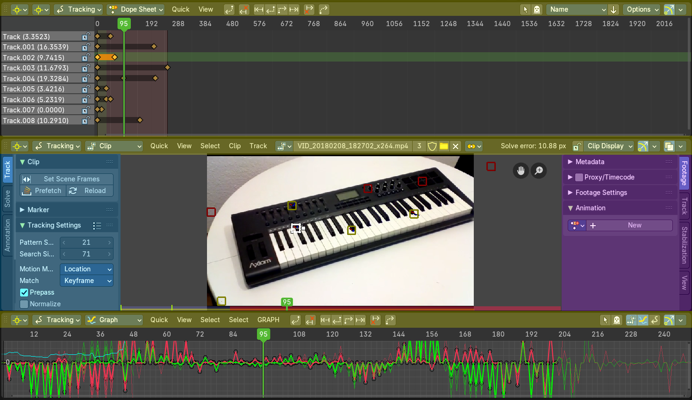
The Movie Clip Editor is the editor where you deal with the footage for motion tracking. Here you load your footage movies, mask them out, set the markers, and calculate the tracks.
Areas
The Movie Clip editor is divided into several areas has several tool areas. In the Clip editor we have header, tool shelf, sidebar and viewport. In the other modes there is just the header and the viewport.
Yellow – Header
Blue - Tool Shelf
Pink - Sidebar
Note that this editor does not have a tool area above the header. All tool settings are in the sidebar in the Tool tab.
Modes and Sub modes
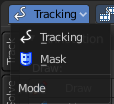
The Movie Clip Editor has two modes. Tracking and Mask mode. The tracking mode has three sub modes that reveals three different sub editors.
Clip, Graph and Dope sheet subeditors
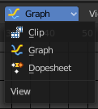
The Movie clip editor is three editors in one. The actual Clip editor, a Graph editor, and a Dope sheet editor. You can switch to the different editor types with the View drop down box in the header.
Tracking Mode - Clip Subeditor
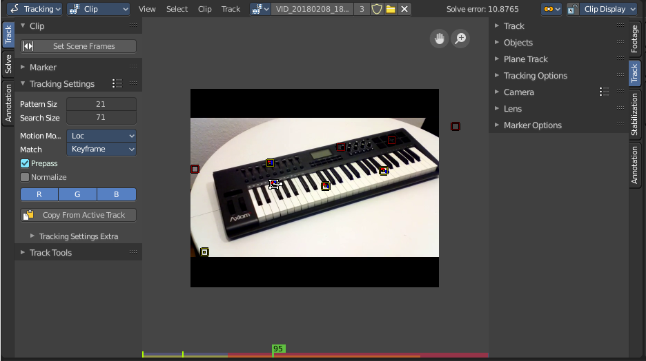
The clip editor contains the footage related tools and settings. Here you deal with the footage movie. It's the main window that you see in the Motion tracking layout. The Clip Editor is used for tracking.
Navigation elements
In the upper right corner you will find two navigation elements.
| Entry | What it does |
|---|---|
| Pan the View | Pans the view |
| Zoom In/Out the View | Zooms in or out. |
Timeline
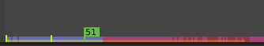
At the ground you can see a timeline. The green slider can be dragged around. You can set and show the current position in the video.
The timeline shows different colors, dependent of the state for this video area. Pink is the area where the tracking works fine. Red the area where the tracking has too much solve errors to show a useful result.
The green lines marks the Keyframe A and Keyframe B, which is the solve area.
Tracking Mode - Graph Subeditor
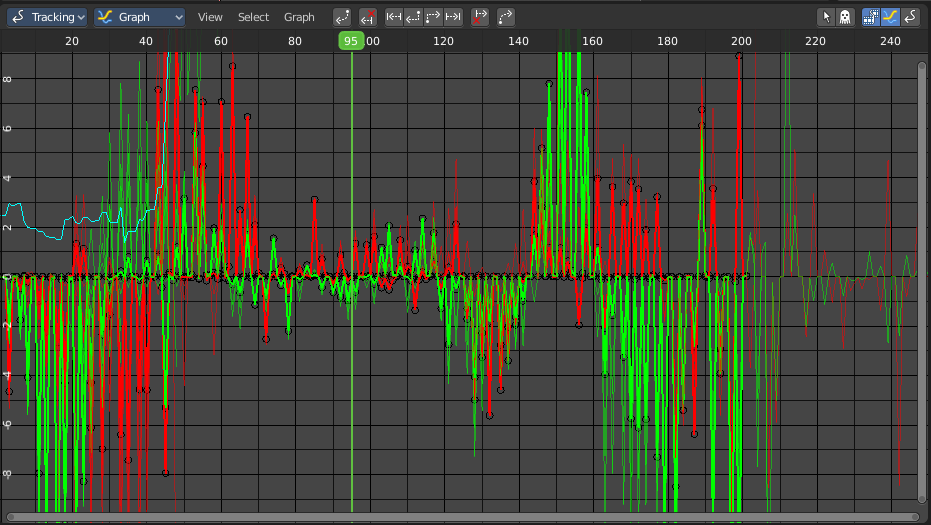
The Graph editor is the place where you can see and deal with the function curves of the recorded tracks for the single markers.
The timeline slider can be moved with the right mouse button. Or with the left mouse button when you grab the handler in the timeline.
Tracking Mode - Dope sheet Subeditor
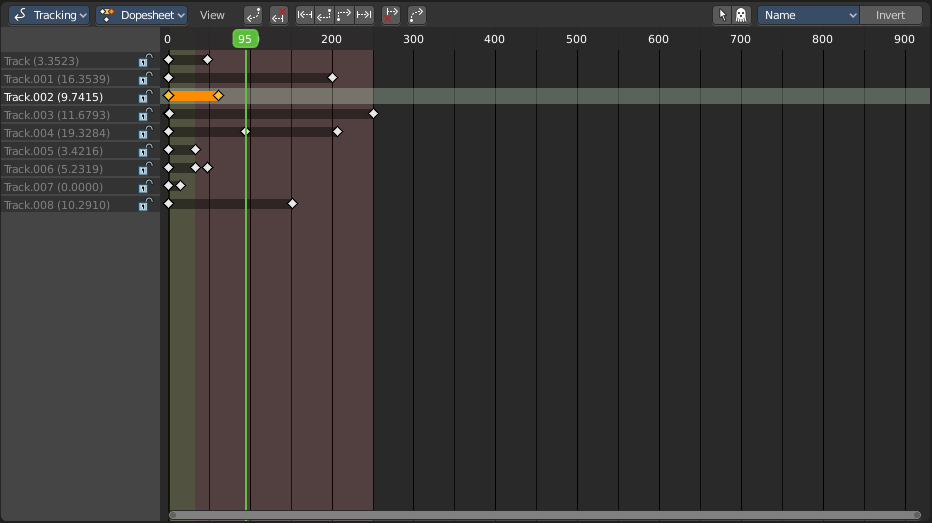
The Dope sheet Editor is the place where you deal with the keyframes for the tracks.
Mask Mode
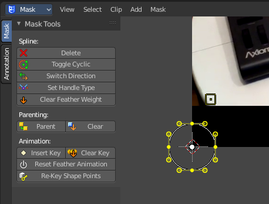
In Mask mode you can mask out parts of the footage by adding splines and adjust them to cover the needed areas.
Masks have many purposes. They can be used in a motion tracking workflow to mask out, or influence a particular object in the footage. They can be used for manual rotoscoping to pull a particular object out of the footage. Or as a rough matte for green screen keying. This is done in the Node editor in compositing mode by a mask node.
Masks are independent from a particular image of movie clip. And so they can just as well be used for creating motion graphics or other effects in the compositor.
Masks are defined by splines. Means you work with splines, and you have a bunch of spline tools available.
Navigation elements
In the upper right corner you will find two navigation elements.
| Entry | What it does |
|---|---|
| Pan the View | Pans the view |
| Zoom In/Out the View | Zooms in or out. |
2D Cursor
In Mask mode you will see a 2d cursor down left. It is for example the point at which the mask primitives are created. This 2D cursor can be set and moved by hotkey Alt + Right Mouse
Last Operator Set 2D cursor
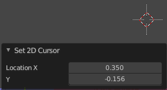
Location X / Y
Adjust the position of the 2D cursor.
Add Vertex and Slide
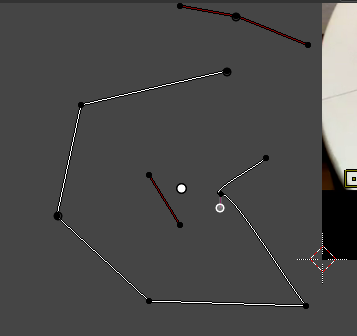
You can create mask spline primitives from the Add menu. But you can also draw your own mask spline with hotkey Ctrl + Left Mouse.
Last Operator Add Vertex and Slide
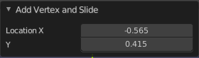
Location X / Y
The location of the latest created vertex point.
Navigating in the viewport
This navigation is valid for all three Movie Clip Editor sub types and both, the tracking mode and the mask mode.
Hotkeys
Pan the view - MMB
Zoom - Mouse Wheel, MMB + Ctrl, Numpad + / -
View All - Home
Tracking mode - Clip Sub mode - Context menu
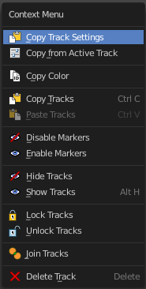
When you double right click into the viewport, then you will open a menu. The Context menu. Its content is to 100% double content to already existing menus. And it is despite the name not contextual.
Graph and Dope sheet sub modes does not have a context menu.
| Entry | What it does |
|---|---|
| Copy Track Settings | Copies track settings from active to selected track. You need to select the source track first, then hold down shift, then select the target track. Then perform copy track settings. |
| Copy from Active Track | Copies track settings from active to default settings. |
| Copy Color | Copies color to all selected tracks. What color? Ask the Blender developers ... |
| Copy Tracks | Copies the selected tracks. |
| Paste Tracks | Pastes the selected tracks. |
| Disable Markers | Disables the currently selected marker(s) |
Enable Markers
Enables the currently selected marker(s)
Last operator Disable Markers
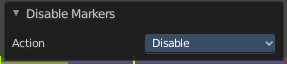
Action
Edit box where you can again choose if you want to enable or disable the selected marker(s).
Hide Tracks
Hides the selected track(s)
Show Tracks
Shows the selected track(s)
Last Operator Hide Tracks
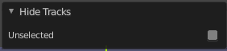
Unselected
Hide the unselected tracks.
Lock Tracks
Locks the selected tracks. You will see the locks in the Dopesheet view.
Unlock Tracks
Unlocks the selected tracks. You will see the locks in the Dopesheet view.
Last Operator Lock Tracks
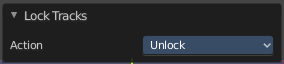
Action
Lock or unlock the selected tracks.
| Entry | What it does |
|---|---|
| Join Tracks | Joins the selected tracks. |
| Delete Track | Deletes the selected tracks. |
Mask mode - Context menu
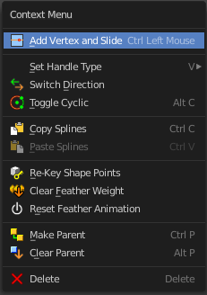
When you double right click into the viewport, then you will open a menu. The Context menu. Its content is to 100% double content to already existing menus. And it is despite the name not contextual.
This functionality becomes active when you create a mask spline from the Add menu.
Add Vertex and Slide
Add a vertex with a handle to draw a free hand polygon.
This tool is hotkey only, and should only be used with the mouse.
Set Handle Type
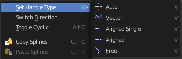
In this sub menu you can set the handle type for the currently selected spline points.
Last operator Set Handle Type
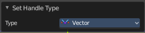
Type
Choose the handle type again.
| Entry | What it does |
|---|---|
| Switch Direction | Switch the direction in which the spline points. A spline has a direction. A starting point and an endpoint. By switching the starting point becomes the end point, the end point becomes the starting point. |
| Toggle Cyclic | Make the spline closed or open. |
| Copy Splines | Copies the currently selected spline. |
| Paste Splines | Pastes a copied spline. |
Re-key Shape Points
Recalculate animation data on selected points for frames selected in the dopesheet.
Clear Feather Weight
Reset the feather weight to zero.
The curve type that is used to create mask splines is almost a Bézier curve. But it has some differences. Smooth edges of the mask are defined by feathering. The curve needed to support feathering in a way that stuck to the curve as you edited it, for ease of editing an animation. These are called S-Curves.
Besides the handles, every control point also has points that define the feather between the current point and the next point on the spline. Each feather point is stored in UV space, where U means position across spline segment, and V means distance between main spline and feather points.
Reset Feather Animation
Resets the feather offset across all animated frames.
| Entry | What it does |
|---|---|
| Make Parent | Set the mask's parenting. |
| Clear Parent | Clears the mask's parenting. |
Delete
Deletes the selected mask curve point.
Tracking Introduction
Match moving is a cinematic technique that allows the insertion of computer graphics into live-action footage ( a movie ) with correct position, scale, orientation, and motion relative to the objects in the shot. And this is what motion tracking does.
Bforartists motion tracker supports tools for 2D tracking and 3D motion tracking. This includes camera tracking and object tracking, as well as some special features like the plane track for compositing. Tracks can also be used to move and deform masks for rotoscoping in the Mask Editor. This is available as a special mode in the Movie Clip Editor.
Manual Lens Calibration
All cameras record distorted video. That's how optical lenses work. For accurate camera motion you need the exact value of the focal length and the “strength” of distortion.
Focal length can only be automatically obtained from the camera’s settings or from the EXIF information. Both is not necessarily available. There are some tools which can help to find approximate values to compensate for distortion. There are also fully manual tools where you can use a grid which is getting affected by distortion model and deformed cells defines straight lines in the footage.
You can also use the grease pencil for this – just draw a line which should be straight on the footage using poly line brush and adjust the distortion values to make the grease pencil match lines on the footage.
To calibrate your camera more accurately, use the grid calibration tool from OpenCV. OpenCV is using the same distortion model, so it should not be a problem.
Camera and Object Motion Solving
Bforartists supports the solving of camera motion, including tripod shots,. It includes also the solving of object motion in relation to the motion of the camera. In addition to that there is the Plane Track, which solves the motion of all markers on one plane.
Tools for Scene Orientation and Stabilization
After solve, you need to orient the real scene in the 3D scene for more convenient compositing. There are tools to define the floor, the scene origin, and the X/Y axes to perform scene orientation.
Sometimes, the video footage includes spurious jumps and tilting movements, like e.g. when using a hand held camera. Based on some tracked image elements, the 2D Stabilization is able to detect and compensate such movements to improve the quality of the final result.
Marker
A marker is a tracking point in the movie. A point where the position of the pixel underneath the marker gets tracked. That's where the camera tries to follow the motion.
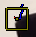
Each marker is represented by a rectangle. You can insert a marker by hand or automatically with the Detect feature.
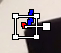
When you select a marker then it will be displayed with handlers. One in each corner, and a straight line from the center of the marker. This Handlers can be manipulated with the mouse.
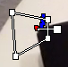
The handlers in the corners allows to distort the marker, to fit it to distortions in the movie.
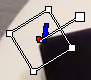
The straight handler from the center allows you to rotate and scale the marker.
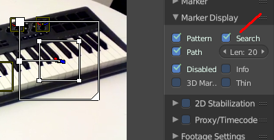
Every marker has also a search area, where the searching for the tracking happens.
The search area can be enabled in the Marker Display panel in the Properties Sidebar.
This area usually scales with the marker. To scale this search area separately you can use the handlers of this search area.
Or you can scale the marker only by pressing the scale hotkey twice.
Track
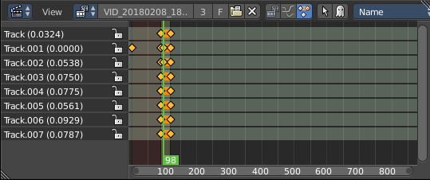
A track is the recorded movement of a marker. The movement is recorded in keyframes and curves. Once recorded you can see the track for the markers in the Dopesheet editor in the Movie Clip Editor.
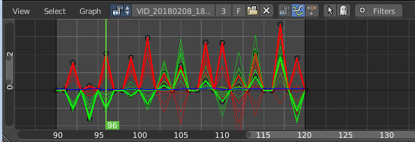
And you can see the curves for this track(s) in the Graph editor.
Quick Favourites menu

When you right click at a menu or a button, then a right click menu will open. Tools have usually a Add to Quick Favourites menu entry.
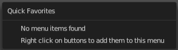
The Quick Menu is empty by default. With Add to Quick favourites you can add this menu to the Quick menu.
In the 3D view we have a menu called Quick in the header, which shows this content then. In the Movie Clip Editor you can just call it with its hotkey. Q. It has no regular menu entry here.
Slider snapping

Snapping also works at sliders. Hover with the mouse over the slider, start to slide, and holding down Ctrl will snap the sliders in incremental steps.
When it's a default value between 0 and 1 then it usually snaps in 0.1 steps. When it's a default value over 1 then it usually snaps in steps of 10.
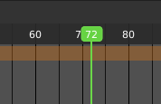
The increment snapping also works at the frame slider. here the incremental snapping happens by the frame rate that you have defined. With a frame rate of 24 it will snap in steps of 24 frames when holding down ctrl.
Short tutorial
There are too many steps involved to get Motion tracking working. You can't figure it out by your own, nothing is self explaining. So here comes a short workflow tutorial.
Note that we will just cover some of the basics here, some first steps. And we describe the setup for a ground tracking case here. I would suggest to search for a Blender tracking tutorial for more details.
Preparing the video
Load a video.
Set the frame to the one where you want to start the tracking. The range of the movie to work with can be set in the Timeline at the bottom of the layout. I have chosen frame 90 to 120 here. Since especially the first frames of my example movie were very blurry.
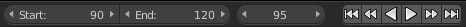
Click the Detect Features button in the tool shelf in the Track tab in the Marker panel. This sets some markers automatically, and adds tracks in the movie clip editor in dopesheet mode. Every track represents one marker.
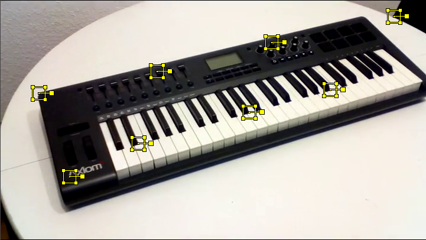
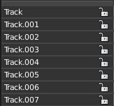
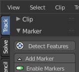
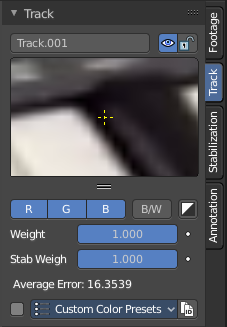
You can add a few more markers manually with the Add Marker button, and place them at marcant locations in the current image of the movie. Borders or Corners for example. To do so, click the Add Marker button, then click in the image. We need minimum eight markers to have enough stability. The Add Marker button is below the Detect Features button.
Selected markers can be moved with the left mouse. You can fine tune the position of the marker in the Track panel in the Properties sidebar. Simply move the image there to the required position.
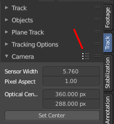
Now choose a camera preset in the properties sidebar in the Camera Data panel. If unsure, and your camera isn't listed, select Blender. The presets can be found in the header.
Or type in the values manually. Sensor and Optical Center ...
Select all markers.
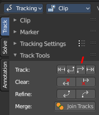
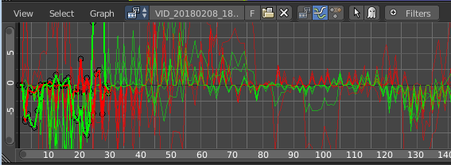
Click the Track Forward button in the Track panel. This records everything. And you get data in the Graph Editor view. Blue and red lines for every marker.
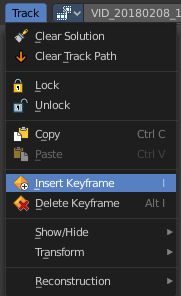
Some markers may go crazy at this point. Motion means blurry graphics. And then a marker can loose its tracking position. Or the tracking point moves out of the visible area.
You can either remove such markers after tracking when you have enough working tracks left. Remember we need eight valid tracks. You can also try to add new markers, and repeat the procedure with this new markers.
Or you can manually adjust the markers, and add a keyframe where they loose their position. Scroll to the frames where the marker is loosing its position, move it back into location, and add a keyframe for it. Adding keyframes is done in the Track menu.
Tracking the object
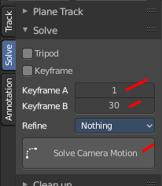
This was the preparation of the movie material. Now for the tracking part. We need a camera. And something to track. A cube will do it for now.
In the 3D view, create or select the object that you want to track.
Now go into camera view, and adjust it so that it shows the content somehow in the center. Our cube for example.
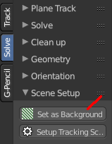
Go to the solve tab into the solve panel. First adjust the range. I had tracked frame 90 to frame 120. So the default of 1 and 30 will not work since there are no keyframes for the markers at this position. And so you will get an error.
When done click at the solve camera motion button. This calculates the camera motion.
In the solve tab in the Scene Setup panel click at Set as Background. This will show our movie as background now in the 3D view in the camera view.
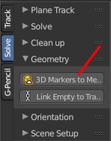
In the solve tab in the Geometry panel, click at 3D Markers to Mesh. You can also click Link Empty to Track. This will create an empty where you can parent things at.
Then click at Setup Tracking Scene below the Set as Background button. This will create a ground plane, which is used for shadow catching in the rendering. And now our object should already follow the motion of the movie when you play back.
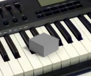
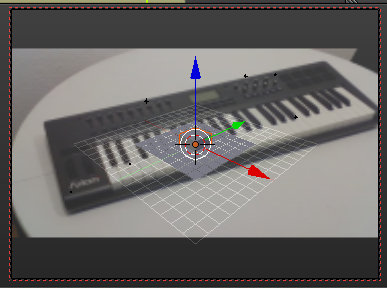
Orientation and dimensions
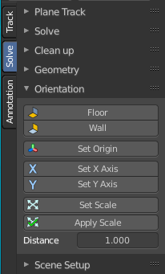
In the solve tab you can find the Orientation panel. This allows you to adjust the orientation of the object along marker points. Select three of your markers, and click at Floor, and the object will orient along this three points.
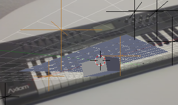
This may or may not lead to useful results. In our case it didn't. Even after selecting other markers. So we need to rotate our object manually.
Reloading a project
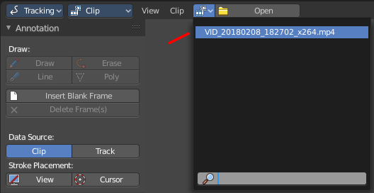
When you save your project and reload it then you might notice that the Movie Clip editor loads empty. This is because Bforartists has by default "Load UI" unticked. The UI does not load from the previous project. And so it looks like the movie is missing and the project is empty.
There is nothing missing. You just need to select the movie again in the dropdown box at the top.
You can also tick Load UI in the file browser when you load the blend file.
When you work more often with motion tracking, then you might want to activate Load UI in the user preferences permanently.